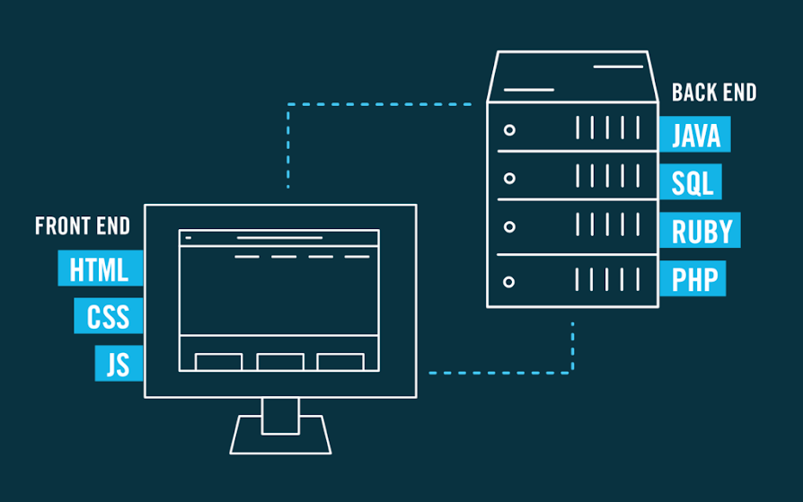

Lo sviluppatore Front End è
colui che realizza la parte visibile del sito, l’interfaccia attraverso la quale l'utente può interagire
LINGUAGGI:
Lo sviluppatore Back End
si occupa del dietro le quinte del sito, invisibile all'utente. Ad esempio può essere intesa la capacità di comunicare con il server per restituire i risultati
richiesti dagli utenti tramite l’interazione con la grafica.
LINGUAGGI:
Per ulteriori informazioni clicca qui
